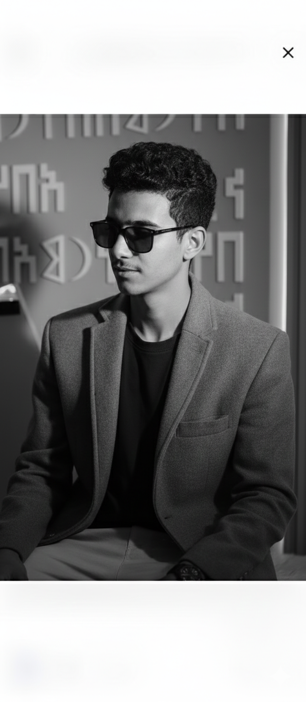

أمجد خليل الشامي
طالب IT — المستوى الثالث
أدرس تقنية المعلومات وأطوّر مهاراتي في البرمجة وبناء تطبيقات الويب والتعامل مع قواعد البيانات. درست C++ وPython وC#، إلى جانب تقنيات تطوير الويب وقواعد البيانات.
HELLO, I’M
أبني معرفتي في البرمجة، تطوير الويب، وقواعد البيانات، وأسعى لتحويل الأفكار إلى تجارب رقمية عملية وحديثة.
01 / ABOUT

طالب IT — المستوى الثالث
أدرس تقنية المعلومات وأطوّر مهاراتي في البرمجة وبناء تطبيقات الويب والتعامل مع قواعد البيانات. درست C++ وPython وC#، إلى جانب تقنيات تطوير الويب وقواعد البيانات.
02 / SKILLS
amjad@portfolio:~$ inspect C++
أساسيات البرمجة، التفكير الخوارزمي، البرمجة الكائنية وهياكل البيانات الأساسية.
03 / FOCUS
تصميم وبناء واجهات ومواقع تفاعلية حديثة مع الاهتمام بتجربة المستخدم والاستجابة للجوال.
تطبيق مفاهيم البرمجة وحل المشكلات باستخدام C++ وPython وC# وبناء أساس قوي في هندسة البرمجيات.
تنظيم البيانات وفهم العلاقات والاستعلامات وربط قواعد البيانات بالتطبيقات ومواقع الويب.
04 / ROADMAP
C++ • التفكير المنطقي • مبادئ الخوارزميات
Python • C# • تطبيقات برمجية
Front-end • Back-end • Databases
بناء Portfolio قوي وتطبيقات قابلة للاستخدام الفعلي
LET’S CONNECT
يمكنك الوصول إليّ عبر حساباتي أو التواصل مباشرة على واتساب.